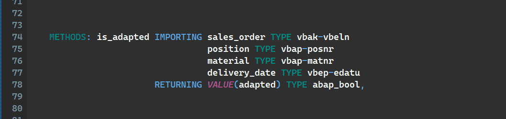

ABAP Quick Fixes - Align Types and Likes
Allows you to align the variable declaration in the way, that TYPEs or LIKEs additions are starting in the same column.
For some it is more readable, for the others not.
